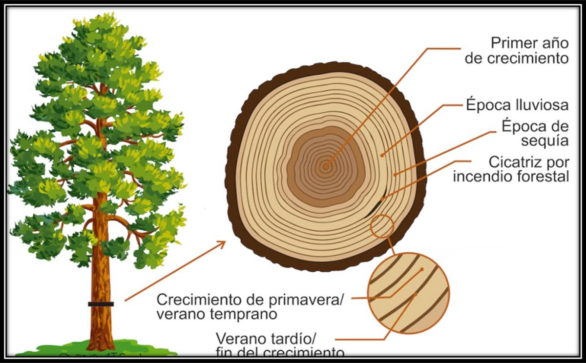
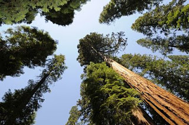
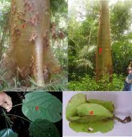

EN EL INTERIOR DE LOS ÁRBOLES SE ALMACENA UN SINNÚMERO DE INFORMACIÓN ÚTIL PARA LA ECOLOGÍA. POR ELLO, LA DENDROECOLOGÍA O DENDROCRONOLOGÍA A
YUDA A LOS EXPERTOS A CONOCER QUÉ FACTORES PUEDEN LLEGAR A AFECTAR A LAS ESPECIES LEÑOSAS.

LOS ESTUDIOS DE DENDROLOGÍA SE ENCARGAN DE IDENTIFICAR LAS PLANTAS EN SUS DIVERSAS ESTRUCTURAS. EN ESTE SENTIDO, SE PUEDE AFIRMAR QUE ES
UNA HERRAMIENTA COMPLEMENTARIA DE LA BOTÁNICA. EN CAMBIO, LA TAXONOMÍA SE LIMITA A LA CLASIFICACIÓN DE LAS PLANTAS EN SU DIVERSIDAD..
CUÁL ES LA IMPORTANCIA DE LA DENDROLOGÍA:
GRACIAS A LA DENDROLOGÍA SE PUEDEN ESTUDIAR PROCESOS GEOLÓGICOS A TRAVÉS DE LOS ANILLOS DE LOS ÁRBOLES.
LA GEOLOGÍA DEL TERRENO VA VARIANDO CON EL PASO DEL TIEMPO HA CAUSADO LOS AGENTES GEOLÓGICOS EXTERNOS.
EL AGUA Y EL VIENTO, LA LLUVIA, ETC. SON DIFERENTES AGENTES GEOLÓGICOS QUE ACTÚAN MODELANDO EL PAISAJE.

QUÉ ESTUDIA LA DENDROLOGÍA:
SE TRATA DE UNA ESPECIALIDAD DE LA BOTÁNICA DEDICADA AL ANÁLISIS DE LAS PLANTAS LEÑOSAS, ESPECIALMENTE AQUELLAS QUE
SON RELEVANTES PARA LA ECONOMÍA. LA DENDROLOGÍA, POR LO TANTO, ESTUDIA LAS CARACTERÍSTICAS DE LA MADERA, EL TIPO DE
CRECIMIENTO DEL TRONCO, LA ANATOMÍA DE LOS EJEMPLARES, ETC.
CUÁLES SON LAS ESPECIES FORESTALES:
MADERABLE
•OYAMELES.
•PINOS.
•ENCINOS.
•CEDRO ROJO.
•CAOBA.
•CEIBA.

CARACTERISTICAS DE LA DENDROLOGIA:
LA DENDROLOGÍA, POR LO TANTO, ESTUDIA LAS CARACTERÍSTICAS DE LA MADERA, EL TIPO DE CRECIMIENTO DEL TRONCO, LA ANATOMÍA DE LOS EJEMPLARES,
ETC. AL DESCRIBIR LOS TRONCOS, LAS HOJAS, LOS FRUTOS Y LAS FLORES, PERMITE LA IDENTIFICACIÓN DE LAS DIFERENTES ESPECIES Y LA CREACIÓN DE
GRUPOS DE ACUERDO A LAS CARACTERÍSTICAS.
OBJETIVO DE LA DENDROLOGIA:
LA DENDROLOGÍA, ENTONCES, ES UNA DIVISIÓN DE LA SILVICULTURA O LA BOTÁNICA QUE TRATA SOBRE LA TAXONOMÍA DE ÁRBOLES Y OTRAS PLANTAS
LEÑOSAS, INCLUYENDO NOMENCLATURA, CLASIFICACIÓN, IDENTIFICACIÓN Y DISTRIBUCIÓN.